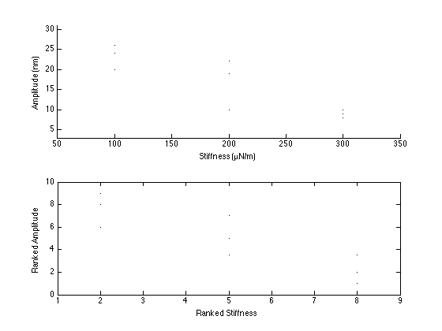

clear all; close all;
kvec(:,1) = [100 100 100 200 200 200 300 300 300];
amplvec(:,1) = [24 26 20 19 22 10 9 8 10];
figure(1);
subplot(2,1,1);
scatter(kvec,amplvec,'k.'); xlabel('Stiffness (µN/m)');ylabel('Amplitude (nm)');
xmin = min(kvec);xmax=max(kvec);ymin=min(amplvec);ymax=max(amplvec);
axis([xmin-50 xmax+50 ymin-5 ymax+5])
[rho,prho] = corr(kvec,amplvec,'type','Spearman');
kvecu = unique(kvec);
[xs,z1] = sort(kvec);
[z1,z2] = sort(z1);
r = (1:length(kvec))';
r=r(z2);
for i=1:length(kvecu)
s=find(kvecu(i)==kvec);
r(s,1) = mean(r(s));
end
kveci = r;
clear xs z1 z2 r s
amplvecu = unique(amplvec);
[xs,z1] = sort(amplvec);
[z1,z2] = sort(z1);
r = (1:length(kvec))';
r=r(z2);
for i=1:length(amplvecu)
s=find(amplvecu(i)==amplvec);
r(s,1) = mean(r(s));
end
amplveci = r;
figure(1);
subplot(2,1,2);
plot(kveci,amplveci,'k.'); xlabel('Ranked Stiffness'); ylabel('Ranked Amplitude');
xmin = min(kveci);xmax=max(kveci);ymin=min(amplveci);ymax=max(amplveci);
axis([xmin-1 xmax+1 ymin-1 ymax+1])
[rho2] = corr(kveci,amplveci,'type','Pearson');
display(sprintf('%s %s','Spearmans rho from corr() function: ',num2str(rho)));
display(sprintf('%s %s','Spearmans rho from hand calculation: ',num2str(rho2)));
Spearmans rho from corr() function: -0.87327
Spearmans rho from hand calculation: -0.87327
